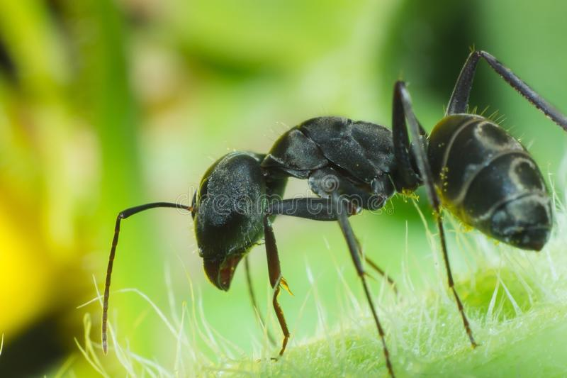

ANT

|
Ants are eusocial insects of the family Formicidae and, along with the related wasps and bees, belong to the order Hymenoptera. Ants evolved from vespoid wasp ancestors in the Cretaceous period. More than 13,800 of an estimated total of 22,000 species have been classified. They are easily identified by their geniculate (elbowed) antennae and the distinctive node-like structure that forms their slender waists. Ants form colonies that range in size from a few dozen predatory individuals living in small natural cavities to highly organised colonies that may occupy large territories and consist of millions of individuals. Larger colonies consist of various castes of sterile, wingless females, most of which are workers (ergates), as well as soldiers (dinergates) and other specialised groups. Nearly all ant colonies also have some fertile males called "drones" and one or more fertile females called "queens" (gynes). The colonies are described as superorganisms because the ants appear to operate as a unified entity, collectively working together to support the colony. Ants have colonised almost every landmass on Earth. The only places lacking indigenous ants are Antarctica and a few remote or inhospitable islands. Ants thrive in moist tropical ecosystems and may exceed the combined biomass of wild birds and mammals. Their success in so many environments has been attributed to their social organisation and their ability to modify habitats, tap resources, and defend themselves. Their long co-evolution with other species has led to mimetic, commensal, parasitic, and mutualistic relationships. Ant societies have division of labour, communication between individuals, and an ability to solve complex problems. These parallels with human societies have long been an inspiration and subject of study. Many human cultures make use of ants in cuisine, medication, and rites. Some species are valued in their role as biological pest control agents. Their ability to exploit resources may bring ants into conflict with humans, however, as they can damage crops and invade buildings. Some species, such as the red imported fire ant (Solenopsis invicta) of South America, are regarded as invasive species in other parts of the world, establishing themselves in areas where they have been introduced accidentally. |
|---|